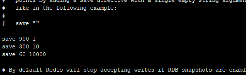
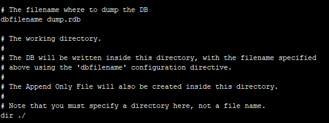
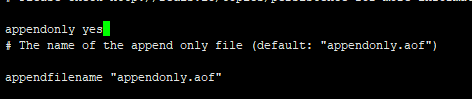
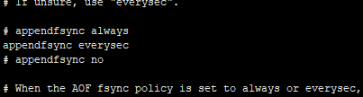
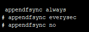

所有的数据都存在内存中，从内存当中同步到硬盘上，这个过程叫做持久化过程。持久化操作，两种方式：rdb方式、aof方式，可以单独使用或者结合使用。
rdb持久化方法：在指定的时间间隔写入硬盘 aof方式：将以日志，记录每一个操作，服务器启动后就构建数据库。
RDB方式 Redis是默认支持的 优势：只有一个文件，时间间隔的数据，可以归档为一个文件，方便压缩转移（就一个文件）
劣势：如果宕机，数据损失比较大，因为它是每一个时间段进行持久化操作的。也就是积攒的数据比较多，一旦懵逼，就彻底懵逼了
[root@hdp-01 redis]# vi redis.conf往下拉：

这里save 900 1 表示 每900秒内至少有1个kery发生变化 就持久化
save 300 10表示 每300秒内至少有10个key发生变化 就持久化
save 60 10000表示 每60秒内至少有10000个key发生变化 就持久化
再往下拉

这里有个dbfilename配置 是保存的持久化的文件名 默认是dump.rdb
dir ./ 表示文件存储路径是当前路径
退出
[root@hdp-01 redis]# ll
总用量 64
drwxr-xr-x. 2 root root 134 9月 1 16:30 bin
-rw-r--r--. 1 root root 109 9月 1 17:30 dump.rdb
-rw-r--r--. 1 root root 58767 9月 3 07:04 redis.conf当前路径里确实是有这个文件的
假如遇到断电或者宕机或者自然灾害 需要恢复数据 我们模拟下 先重置下数据
shutdown关闭下redis
127.0.0.1:6379> shutdown
not connected> exit
[root@hdp-01redis]# ll总用量 52
drwxr-xr-x. 2 root root bin
-rw-r--r--. 1 root root dump.rdb
-rw-r--r--. 1 root root redis.conf
删掉rdb文件 再启动redis 这时候启动 是没数据的
[root@hdp-01]# rm -rf dump.rdb
[root@hdp-01redis]# ./bin/redis-server ./redis.conf
[root@hdp-01redis]# ./bin/redis-cli
127.0.0.1:6379> keys *
(empty list or set)搞几个key 然后shutdown save 保存退出
127.0.0.1:6379> set n1 1
OK
127.0.0.1:6379> set n2 2
OK
127.0.0.1:6379> set n3 3
OK
127.0.0.1:6379> shutdown save
not connected> exit假如这时候 我们再重启redis 这时候启动过程会进程rdb check验证 然后加载redis目录下rdb文件 加载数据
验证下：我们再次启动
[root@hdp-01 redis]# ./bin/redis-server ./redis.conf
[root@hdp-01 redis]# ./bin/redis-cli
127.0.0.1:6379> keys *
1) "n1"
2) "n3"
3) "n2"说明是数据加载进来了
这里我们把redis下的rdb文件剪切到其他地方去 然后再启动试下
[root@hdp-01 redis]# mv dump.rdb /root/剪切到root下
这时候再启动下
[root@hdp-01 redis]# ./bin/redis-server ./redis.conf
[root@hdp-01 redis]# ./bin/redis-cli
127.0.0.1:6379> keys *
(empty list or set)发现所有数据都没了 恢复数据的话 我们只需要把备份文件搞到redis下即可
[root@hdp-01 redis]# cp /root/dump.rdb /usr/local/redis/
cp：是否覆盖"/usr/local/redis/dump.rdb"？ y
[root@hdp-01 redis]# ./bin/redis-server ./redis.conf
[root@hdp-01 redis]# ./bin/redis-cli
127.0.0.1:6379> keys *
1) "n2"
2) "n1"
3) "n3"
AOF方式：将以日志，记录每一个操作
优势：安全性相对RDB方式高很多
劣势：效率相对RDB方式低很多
AOF方式：将以日志，记录每一个操作
优势：安全性相对RDB方式高很多；劣势：效率相对RDB方式低很多；
配置：
[root@hdp-01 redis]# vi redis.conf 编辑redis.conf
appendonly no默认关闭aof方式 我们修改成yes 就开启
下面那个是默认的aof文件名

再往下拉：

这里是三种同步策略：
always 是 只要发生修改 立即同步 （推荐实用 安全性最高）
everysec 是 每秒同步一次
no是不同步
修改成always

重新启动redis 随便加几个key
这里就有一个appendonly.aof文件
重置数据
[root@hdp-01 redis]# rm -rf dump.rdb 启动redis
[root@hdp-01 redis]# ./bin/redis-server ./redis.conf
[root@hdp-01 redis]# ./bin/redis-cli
127.0.0.1:6379> keys *
(empty list or set)目前数据库是空 添加数据
127.0.0.1:6379> set n1 1
OK
127.0.0.1:6379> set n2 2
OK
127.0.0.1:6379> set n3 3
OK
127.0.0.1:6379> shutdown nosave
not connected> exit
把aof文件剪切到其他地方 启动
[root@hdo-01 redis]# mv appendonly.aof /root/
[root@hdo-01 redis]# ./bin/redis-server ./redis.conf
[root@hdp-01 redis]# ./bin/redis-cli
127.0.0.1:6379> keys *
(empty list or set)我们再把aof文件复制回来
[root@hdp-01 redis]# cp /root/appendonly.aof /usr/local/redis/
cp：是否覆盖"/usr/local/redis/appendonly.aof"？ y
[root@hdp-01 redis]# ./bin/redis-server ./redis.conf
[root@hdp-01 redis]# ./bin/redis-cli
127.0.0.1:6379> keys *
1) "n1"
2) "n3"
3) "n2"
平时定期把rdb文件备份到指定地方 需要恢复的时候直接把rdb搞到redis下；aof文件定期备份 需要的时候拷贝到redis下 重启即可